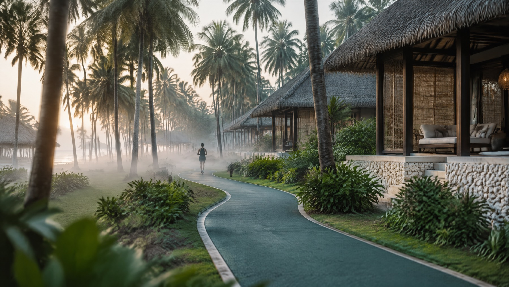
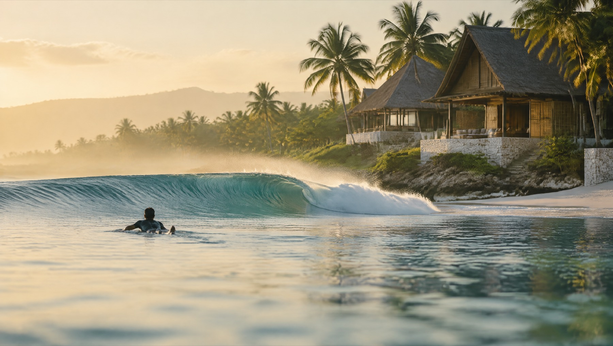
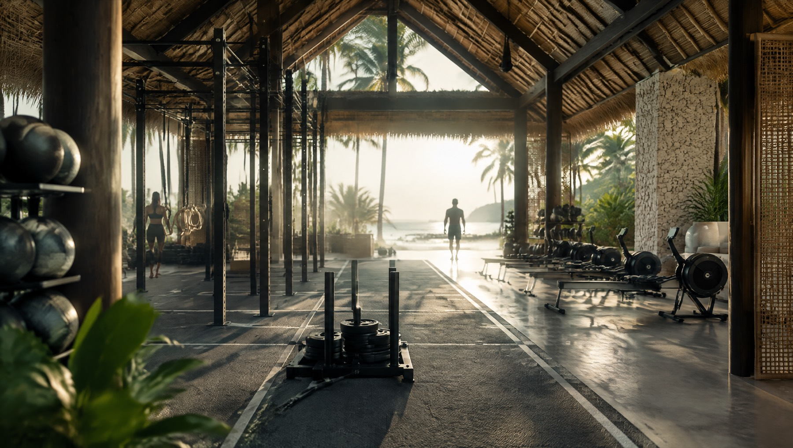
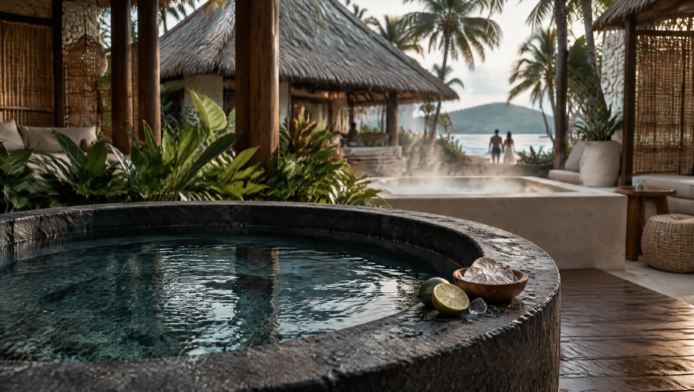
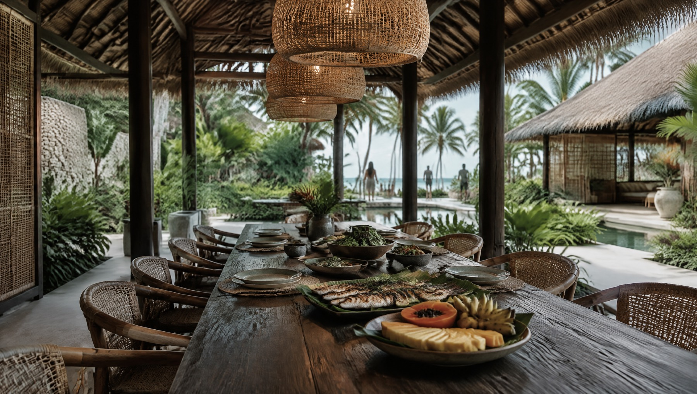
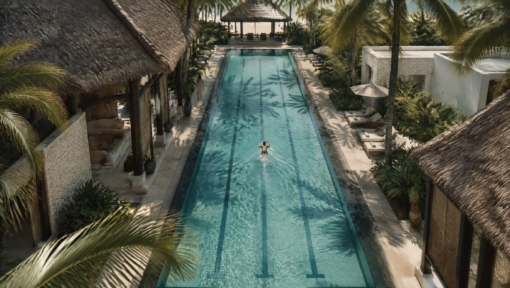
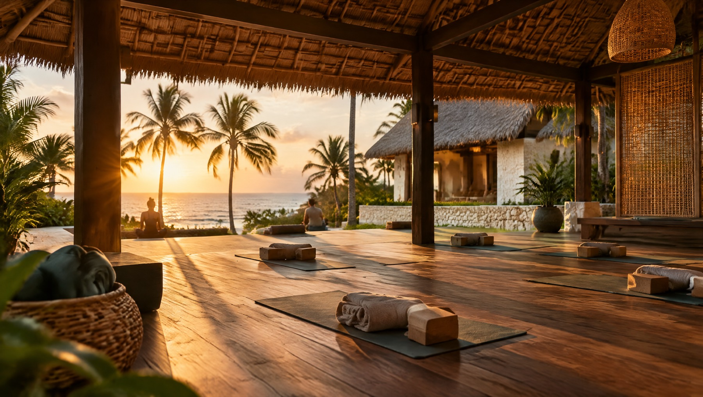
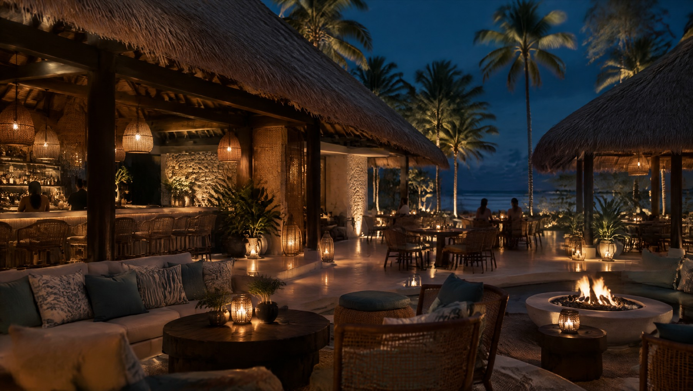
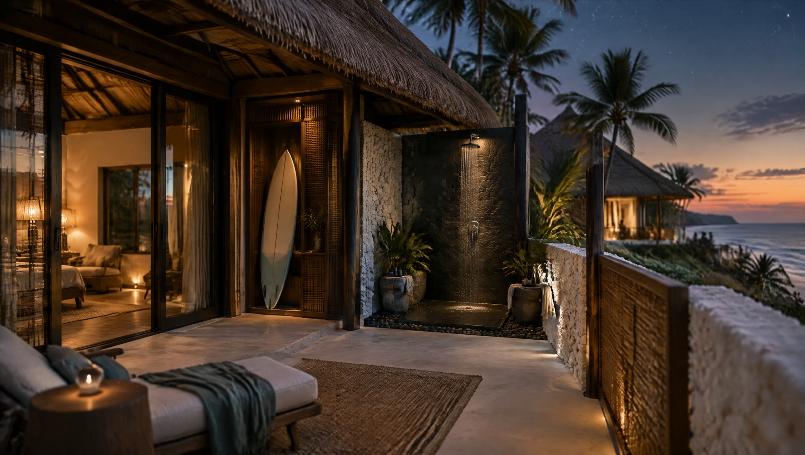

Sporto ir sveikatingumo viešbutis Siargao saloje. Trisdešimt kambarių, vandenynas už dešimties minučių ir viskas, ko reikia rimtai savaitei.
Siargao saloje yra šimtai vietų, kur galima nieko neveikti.
Nėra nė vienos, kur galima rimtai treniruotis.
Įprastos atostogos duoda tris dienas gero jausmo, o paskui jis dingsta. Savaitė, per kurią miegojote, judėjote ir valgėte kaip reikia, jaučiasi dar mėnesius. Visas šitas viešbutis pastatytas dėl to vieno skirtumo.
Ne savybių sąrašas, o tikra diena. Viskas, kas čia surašyta, yra tame pačiame sklype ir nuo kambario durų nutolę mažiau nei minutę pėsčiomis.
Keturi šimtai aštuoni metrai minkštos dangos aplink sklypą, po kokosų palmėmis. Ne pakelėje, ne tarp motorolerių. Tiek ratų, kiek norisi, ir dušas už penkiasdešimties metrų.

Iki banglenčių vietų dešimt minučių. Lentą laikote savo kambaryje, vėdinamoje nišoje prie durų, ne po lova ir ne bendrame sandėlyje.

Atvira salė po stogu: rėmas, rogių takas, irklavimo aparatai, svoriai. Tikra įranga, kurios užtenka rimtai treniruotei, o ne nuotraukai.

Du šalto vandens baseinai ir džakuzi medinėje terasoje. Po treniruotės arba po banglenčių. Tai ne spa procedūra su registracija, tai vieta, į kurią tiesiog įeini.

Viena ilga medinė stalo lenta po atviru stogu. Žuvis, vaisiai, žalumynai. Virtuvė žino, ką reiškia valgyti tarp dviejų treniruočių.

Baseinas su takeliais, ne apvalus su baru viduryje. Galima plaukti ratus ir skaičiuoti laiką. Saloje tokio nėra.

Terasa po stogu, atvira iš šonų. Vakarinė sesija vyksta tada, kai saulė krenta virš palmių, ir tai yra vienintelė priežastis, kodėl ji ten pastatyta būtent taip.

Baras ir restoranas atviri iš visų pusių. Trisdešimt kambarių reiškia, kad per savaitę pažįstate beveik visus.

Kiekvienoje terasoje savas lauko dušas. Smėlis lieka lauke, o paskutinis dienos vaizdas yra ne televizorius.

Tai ne rinkodaros teiginiai, o statybos sprendimai. Kiekvienas iš jų kainuoja pinigus ir užima sklypo plotą, todėl jų niekas ir nedaro.
Trys dalykai, kurie yra kiekviename kambaryje, nesvarbu ar tai mažiausias Studio, ar Suite.
Galima atvažiuoti ir šiaip. Bet visa vieta veikia geriausiai tada, kai lieka bent šešioms dienoms.
Apie tai paprastai tyli. Mums lengviau pasakyti iš karto, nei nuvilti vietoje.
Kairėje tai, ką saloje rasite beveik visur. Dešinėje tai, kas bus čia.
| Įprastas salos viešbutis | ALON | |
|---|---|---|
| Rytinė mankšta | Treniruoklių kambarėlis be lango arba joga ant pievelės | Atvira salė su rėmu, rogėmis ir svoriais, keturiasdešimt žingsnių nuo kambario |
| Baseinas | Vingiuotas, seklus, su baru viduryje | 25 m, tiesūs takeliai, tamsus akmens kraštas |
| Po treniruotės | Dušas kambaryje | Du šalto vandens baseinai ir džakuzi, atviri visą dieną |
| Bėgimas | Pakelėje, tarp motorolerių ir smėlio | 408 m minkštos dangos takelis po palmėmis, apšviestas |
| Banglenčių įranga | Po lova arba bendrame sandėlyje | Vėdinama niša prie kambario durų, plius lauko dušas terasoje |
| Vieta jogai kambaryje | Nėra, stumdote staliuką | Suplanuota tuščia zona, ne mažiau 2,0 × 1,0 m |